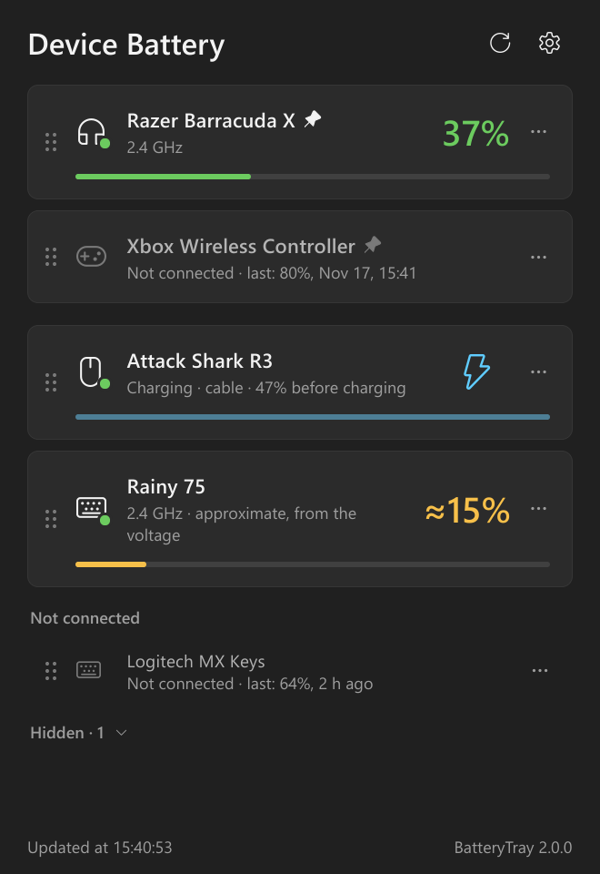

The battery level of every wireless device, in the Windows tray and the Mac menu bar
BatteryTray shows how much charge your wireless headset, mouse, keyboard, controller and AirPods have left, and reminds you before they die mid-game or mid-call. Free and open source, no account, no vendor software: it only reads the battery.


Windows 10 and 11 · macOS 13 Ventura or later, Apple Silicon and Intel · MIT license · How to install · All versions


What it does
The level always in sight
The device that most needs charging, as a colored number next to the clock or in the menu bar; every device in one window.
Reminders you can't miss
A window of its own when a battery runs low, not a toast, that waits while you're away; a level of its own for each device.
No vendor software
Talks to Razer, Logitech, SteelSeries, HyperX, Corsair and many more devices through their receivers, the way their own apps do.
Bluetooth too
AirPods with each earbud and the case, Magic devices, headsets, controllers, any Bluetooth device the system knows a level for.
Overlay in games
A shortcut shows your devices' levels for five seconds over games and full-screen apps, without taking focus.
New devices by themselves
Plug in a receiver or connect a headset and it shows up within seconds. Updates itself from GitHub.
Widgets on the Mac desktop
Rings or a list of your devices, or just the one to charge next, on the desktop of macOS 14 or later.
A reminder before it dies

When a device drops below its level, BatteryTray shows its own window in the corner: Do Not Disturb doesn't hide it and it doesn't steal focus from a game. Snooze it for a few minutes or until the device is charged, or let it close on its own after 10 seconds and come back later; at the critical level it comes back anyway.
Devices
Razer (Barracuda X, BlackShark, Kraken, Viper, DeathAdder, Basilisk and about 45 mice and keyboards) · Logitech (MX Master, MX Keys, MX Ergo, G Lightspeed mice, G and ASTRO headsets) · SteelSeries (Arctis, Aerox, Prime) · HyperX (Cloud, Pulsefire) · Corsair (HS80, Void, Virtuoso, SLIPSTREAM) · ASUS ROG · Attack Shark · VXE / VGN · ATK · Lamzu · Pulsar · Glorious · WLmouse · MCHOSE · AULA · Keychron · Rapoo · JBL Quantum · Audeze · Jabra · Sony INZONE · DualSense and DualShock 4 · Xbox and Switch controllers · Steam Controller · 8BitDo · AirPods and Beats · Apple Magic Keyboard, Mouse and Trackpad · iPhone and iPad (Mac) · Android phones (Windows) · any Bluetooth device the system knows a level for. The full list.
Questions
Is there an app that shows the battery level of my wireless mouse, keyboard or headset in the taskbar?
Yes — BatteryTray, for Windows 10/11 and macOS 13+. It shows the level as a number next to the clock or in the menu bar and reminds you before the battery runs out.
How do I see the battery of my Bluetooth devices on Windows 11 without opening Settings?
BatteryTray puts every Bluetooth device whose level Windows knows in the tray, read fresh from Bluetooth LE devices.
How do I get a low battery warning for my wireless mouse or headset?
Set a level (20% by default, or one per device): BatteryTray shows a reminder window, and again at the critical level.
How do I see my AirPods battery on Windows?
BatteryTray reads each earbud's and the case's level from the AirPods' own Bluetooth messages.
How do I check my Razer or Logitech mouse battery without Synapse or G HUB?
BatteryTray asks the device through its receiver with its own protocol, as the vendor's app would, and shows the level in the tray.
Is there a Mac menu bar app that shows the battery of all my devices?
Yes: BatteryTray for macOS lists AirPods, Magic devices, Bluetooth headsets and mice, controllers, an iPhone or iPad on a cable, and gaming peripherals on their receivers.
Is there a Mac desktop widget for the battery of my headset, mouse or keyboard?
Yes: on macOS 14 or later BatteryTray has widgets for the desktop (right-click the desktop → Edit Widgets…): the device to charge next, or rings or a list of your devices, gaming devices on their receivers included.